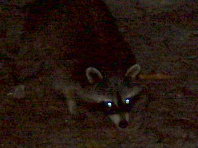

June 22, 10,753 miles
| Out of camp by 7:15 - with a lot of miles to drive today. | |
| Our first stop, as we drove across Wisconsin was at the Cranberry Farm Museum. Wisconsin is now first in the nation in Cranberry production, growing them in large rectangular shaped marshes that allow the use of larger equipment, such as the boom fertilizer shown here. | |
| Of course Wsiconsin is also the "Dairy State." There were numerous farms along the highway. | |
| And, of course to be the Dairy State you have to grow some very large cows. | |
| The shocker of all was our re-introduction to civilization, or at least the indicators of civilization - traffic, road construction, toll booths, ... | |
| We had one last night to spend on the road. We camped at an Indiana State Park - The Indiana Dunes. The campground was large, with some 250 campsights, and relatively crowded. We were also visited by a few racoons in the evening. |  |
| 605 miles today. Wildlife for the day included: racoons (3-4). |
|